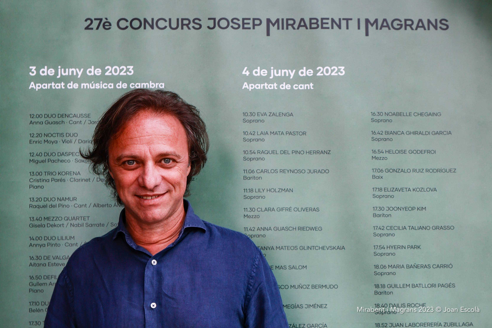

Música de cambra i Cant
Edició actual
Informació bàsica i calendari de modalitats.
Sitges · Catalunya
Concurs internacional de música clàssica que posa al centre els intèrprets i ofereix als joves músics un espai per créixer, donar-se a conèixer i avançar en el seu camí professional.
Edició actual
Edició actual
Tota la informació de la convocatòria actual: bases, dates, proves, premis, lloc i jurat.
Música de cambra i Cant
Informació bàsica i calendari de modalitats.
El concurs
El Concurs Josep Mirabent i Magrans està dedicat a la música clàssica i posa els intèrprets al centre. La seva vocació és reconèixer la qualitat artística i, especialment, oferir als joves músics una oportunitat per donar a conèixer el seu talent, ampliar la seva projecció i continuar desenvolupant la seva trajectòria professional.
Jurat · Edició 2026
Composició actual del jurat de 2026.
-min.jpeg)

-min.jpeg)


Trajectòria
Tres dècades de música, d'intèrprets i de trobades artístiques que han consolidat el concurs com un espai de descoberta i projecció del talent.
Coneix la històriaParticipa
La inscripció continuarà fent-se per correu electrònic. Les instruccions i la documentació de la convocatòria es mostraran aquí.
Veure inscripcions